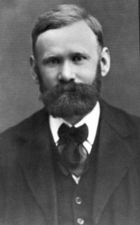
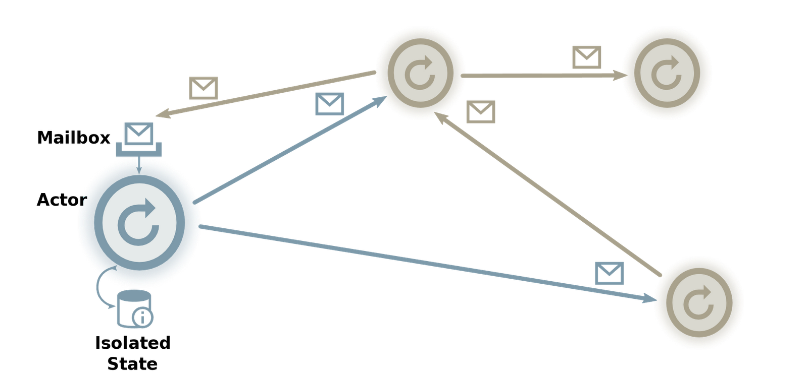
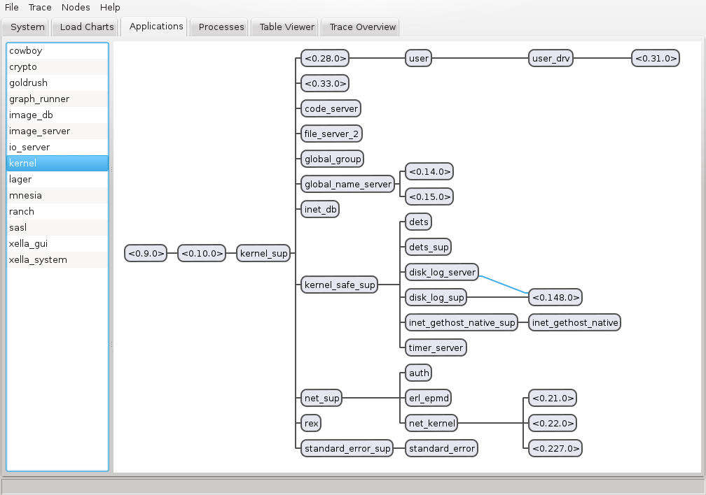
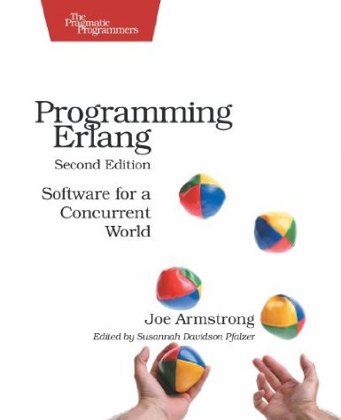
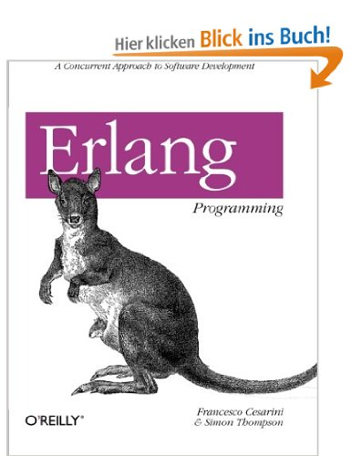
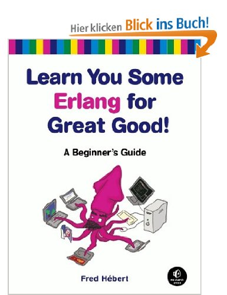
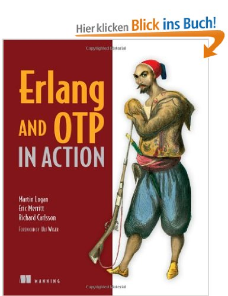

Erlang für Manager
Features, Hype, Buzzwords und Bla-Bla
08. Dezember 2013
Falco Hirschenberger

Agenda
- Was ist Erlang?
- Erlang Philosophie
- Kein Licht ohne Schatten
- Erlang in der BV
Das will ich auch lernen!
Was ist Erlang?
(in Buzzwords)
“Erlang is a declarative, dynamically-typed, functional, concurrent, distributed and fault-tolerant programming language with garbage collection and code hot-swapping built into its soft-realtime runtime system.”
Ok, alles klar? Fertig.
Was ist Erlang?
(woher)
- Entwickelt 1986 von
Joe Armstrong
bei Ericsson - Seit 1998 Open Source (Mozilla Public License)
- Der Name kommt vom dänischen Mathematiker
Agner Krarup Erlang
oder bedeutet einfach Ericsson language - Entwickelt für den Einsatz in großen TK-Anlagen für den Dauerbetrieb (max. Ausfallzeit < 4min/Jahr)
|  | |||
| Agner Krarup Erlang | Joe Armstrong |
Was ist Erlang?
(wofür)
- Hochgradig parallele Anwendungen (concurrency) in Multicore und Cloudumgebungen
- Echtzeitanwendungen
- Hochverfügbarkeitsanforderungen
- Dauerbetrieb
Also wie geschaffen für unsere Inspektionssysteme
Was ist Erlang?
(wofür NICHT)
- Numbercrunching
- Bildverarbeitung
- Grafische Oberflächen
- Desktopanwendungen
Also nichts für unsere Algorithmiker
Erlang Philosophie
The world is concurrent: things in the world don't share data, things communicate with messages, things fail.
-- Joe Armstrong
- Programmstruktur durch Prozesse statt Klassen und Objekte
- Kommunikation durch Nachrichtenaustausch
- Synchronisation durch Verzicht auf Datenteilung und globale Daten
- ⇒ Actor Model
Actor Model
Erlang Philosophie
Let it crash!
- Wiederherstellung statt defensiver Programmierung
- Supervisor als Exception auf Speed
- Supervisor bilden Bäume von sich überwachenden Prozessen
- Supervisor haben Regeln wie und wie oft neu gestartet wird bis sie selbst fehlschlagen
Supervision Trees



Erlang Philosophie
KISS - Keep It Simple Stupid.
- Mächtige Standardbibliothek mit pragmatischer, einfacher API.
% read a file {ok, Data} = file:read_file("/home/masc/ofiProtokoll.rst"). % sum up the size of all PNG files in a directory recursively. filelib:fold_files("/home/masc/images", "*.png", true, fun(File, Acc) -> filelib:file_size(File) + Acc end, 0). % call function every second timer:apply_interval(1000, io, format, ["Hello World"]). - Netzwerktransparenz
% send a message to another process in the same VM graph_runner ! {run_graph, [Img1, Img2]}, % send a message to a process on another computer {masc@worker1, graph_runner} ! {run_graph, [Img1, Img2]}, receive {result, ResultImg} -> ResultImg end.
Kein Licht ohne Schatten
Syntax
-module(evaluate).
-export([do_evaluate/4]).
do_evaluate(Img, FromPid, No, Width) ->
T1 = now(),
Graph = load_graph(graph_file),
case graph_runner:run_graph(Graph, [Img, Width, 1]) of
{results, Res} ->
% notify the collector of a new result
FromPid ! {new_result, Res, No},
lager:info("Graph time: ~p",
[timer:now_diff(now(), T1)/1000]);
{error, R} ->
lager:error("Evaluation error: ~p", [R]),
% notify the collector of an evaluation error
FromPid ! {error, R, No}
end.
Kein Licht ohne Schatten
Semantik
-
Variablen sind nicht veränderbar
Eshell V5.10.3 (abort with ^G) 1> Txt = "Hallo" ++ " Welt". "Hallo Welt" 2> Txt = Txt ++ "!". ** exception error: no match of right hand side value "Hallo Welt!" - Es gibt keine for-Schleifen nur rekursive Funktionsaufrufe und funktionale Sprachkonstrukte (
map, fold, foreach)Eshell V5.10.3 (abort with ^G) 3> lists:foldl(fun(N, Acc) -> N + Acc end, 0, lists:seq(1,100)). 5050
Erlang in der BV
Erstes System Stüken
- Klassisches verteiltes Inspektionssystem (3 Worker, 1 Master Rechner)
- Zunächst Entwicklung von Infrastruktur Modulen (Kamera- und IO-Karten Ansteuerung, Graphrunner, Bilddatenbank)
- Endliche Automaten-basierte Prozesssteuerung (direkt von Erlang unterstützt)
- Webbasierte Benutzeroberfläche

Fazit: Läuft!
Erlang in der BV
Bislang größtes System Xella
- Klassisches verteiltes Inspektionssystem (1 Worker, 1 Master Rechner)
- Wiederverwendung und Erweiterung bestehender Module
- Neue Module (Profibus OMG!)
- Riesige Bilddaten (16.000 x 32.000px)
- Aufwendige Benutzeroberfläche

Fazit: Läuft (fast)!
Das will ich auch lernen!
- Bücher:
    - Kostenlos online: Learn you some Erlang for Great Good! http://learnyousomeerlang.com
- Erlang Homepage: http://www.erlang.org
Pah! Das will ich nicht lernen!